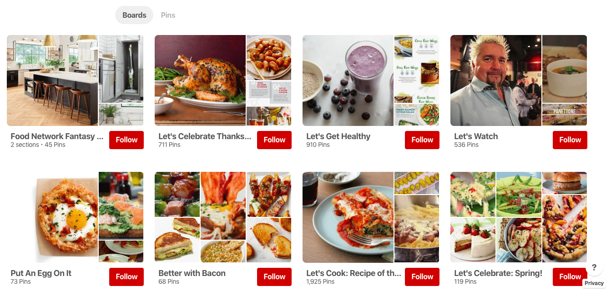

Contact Us
Contact Killeen Italian Food the next time you are hungry and try our one of a kind Italian Food. We also have a money back guarantee if you are not happy with your meal. You will recieve every penny back you payed.
Killeen Italian Food156 W 42nd St
New York, NY 10036
Call: 646-350-4645
Email: Killeen.ItalianFood@example.com
Click the social media symbol to Follow Us on Socail Media.
Like our Facebook page to keep up to date on all of our special in store events coming up in the up coming months.
Follow our Twitter. We tweet one day only special offers, only available to our Twitter followers when you show our tweet in store the day its posted to our Twitter.
Follow our Snapchat to meet the amazing people who work at Killen Italian Food and to see whats happening behind the counter.
Follow our Instagram to see pictures of our delicious food, you cant see anywhere else.
Follow our YouTube to see how we cook our delicious one of a kind food and more.
Follow our Pinterest to see the daily changes that are happening to Killeen Italian Food, because we are always adapting and making our restaurant better for all of our lovely guests like you.
